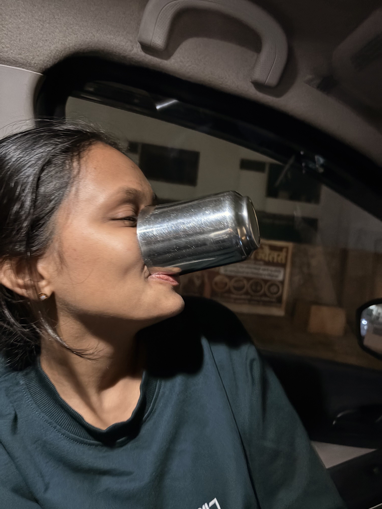
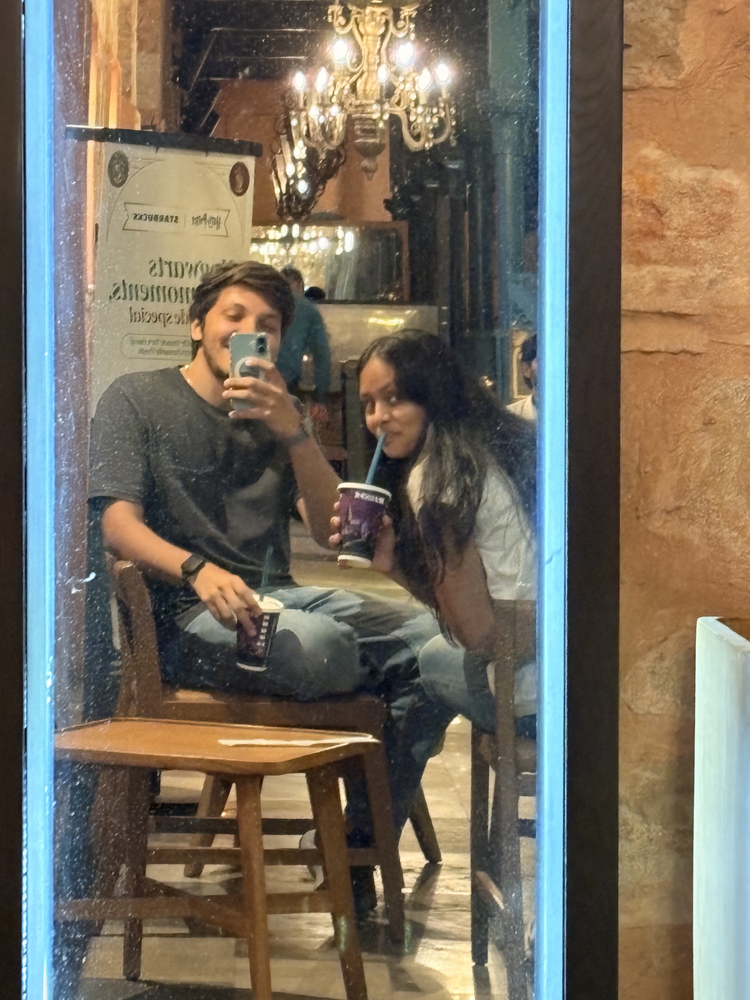
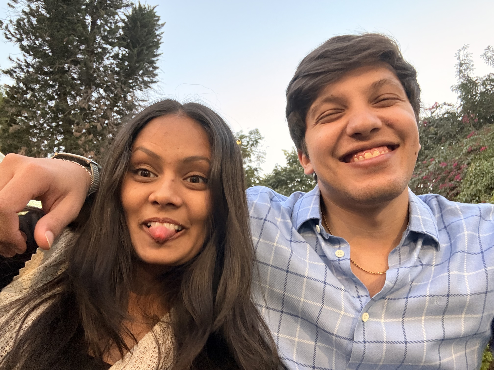
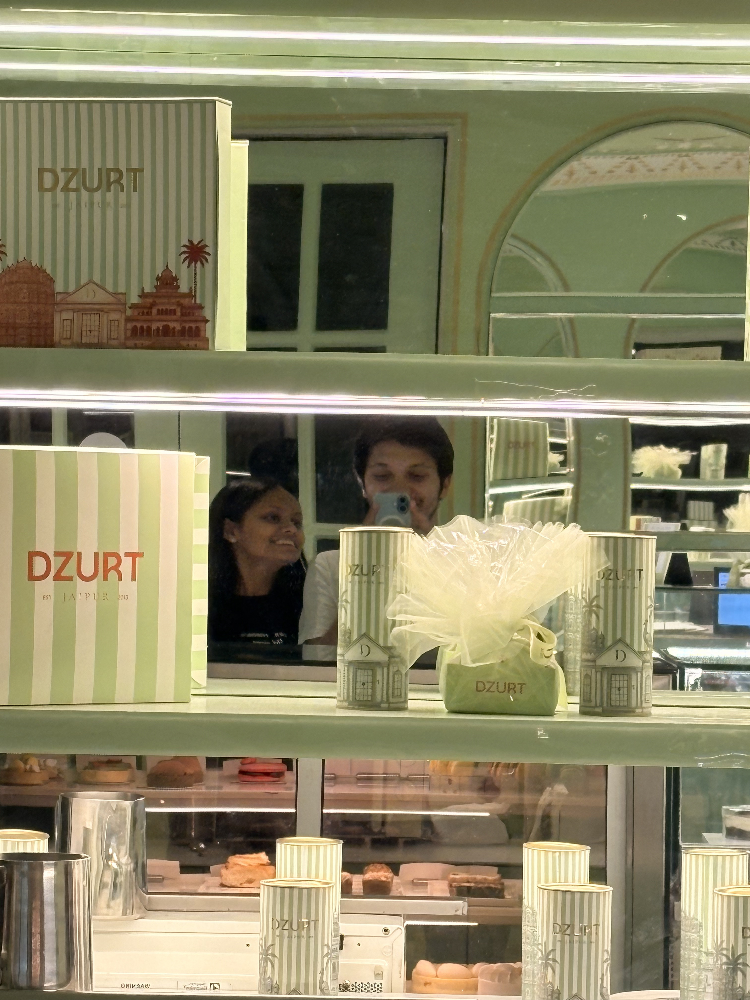
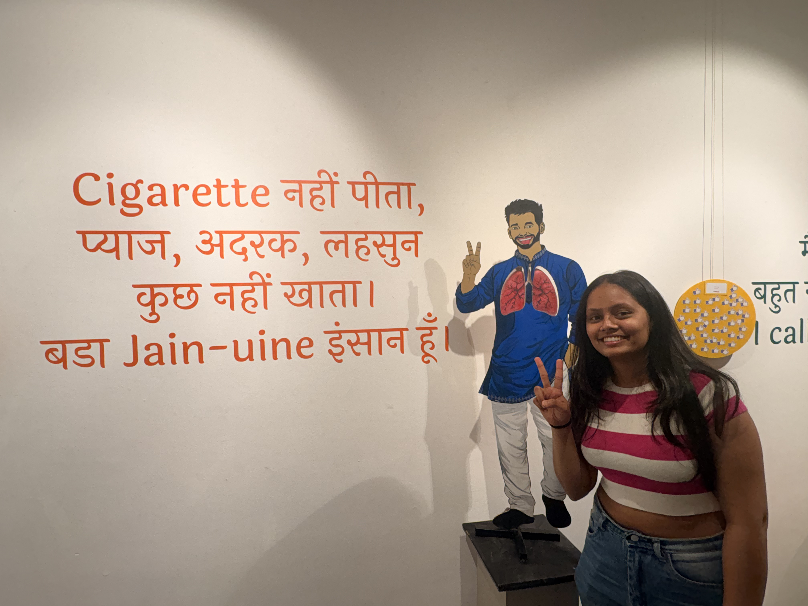

Interior designer.
Jodhpur.
Functionally nocturnal.
also known as Paado Ji.
details remain unclear.

Evidence 01
captured at a socially acceptable hour.
Alarm rings.
optimism.
snooze.
catastrophic miscalculation.
Dietary Thesis
dietary decisions are surprisingly consistent.
loki.
matar.
and occasionally:
popcorn + chilli lemon lays.
a balanced ecosystem.
Identity Archive / 003

Dataset / P-01
Prachi
official release

Dataset / P-02
Paado Ji
environment dependent

Dataset / P-03
Jiggly Puff
unfortunately accurate
She drives a red Access 125.
confidence levels increase dramatically in traffic.
Ae chutiye, dekh ke chala na.
communication style: unexpectedly efficient.

Status: Jain-uine
Evidence 02
further investigation unnecessary.
Ref: JDP_INC_002
She designs interiors.
structured spaces
careful balance
thoughtful composition
none of which apply to mornings.
and despite everything…
the missed alarms.
the traffic rage.
the emotional dependence on popcorn and chilli lemon lays.
you’re still here.
you’ve got this.
probably after one more nap, but still.
This appears to be the complete dataset.
although sources remain unreliable.
Verified: 2026
Paado Ji / Dataset V.1.0
Status: Incomplete